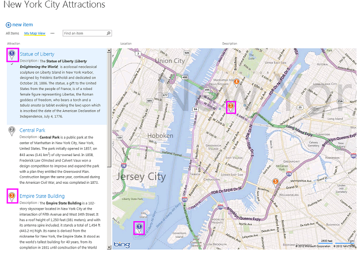

SharePoint 2013 introduces a new field type named Geolocation that enables you to annotate SharePoint lists with location information. For example, you can now make lists "location-aware" and display latitude and longitude coordinates through Bing Maps. An entry is typically seen as a pushpin on a map view. Together, the Geolocation field and the Map View enable you to give spatial context to any information by integrating data from SharePoint into a mapping experience, and let your users engage in new ways in your web and mobile apps and solutions, as shown in Figure 1.
Figure 1. A map view with different pushpin colors

This sample demonstrates how to programmatically create a map view to a SharePoint 2013 list. The SharePoint 2013 list displays the location on a map powered by Bing Maps. In addition, a new view named
Map View displays the list items as pushpins on Bing Maps, and a
Silverlight control with the list items as cards on the left pane.
This sample is a console application that programmatically creates a map view of a SharePoint list.
This sample requires the following:
The CreateMapView code sample contains the Program.cs file. Program.cs contains the logic of the console application, which creates a map view of the SharePoint 2013 list with the Geolocation field type. For more information about the new Geolocation field type, see Integrating location and map functionality in SharePoint 2013.
To configure the sample, make the following changes to Program.cs.
• Choose the F5 key to build and deploy the console application.
The following table lists one common configuration and environment error that might prevent the sample from running or deploying properly and how to solve it.
| Problem | Solution |
|---|---|
| Error message appears when you open a map view page:
This view no longer has a geolocation field, so it cannot be displayed in a map view. |
Add a Geolocation column to the list where you want to create a map view. To learn more how to add a Geolocation column to the SharePoint list, see How to: Add a Geolocation column to a list programmatically in SharePoint 2013. |
First version: September 10, 2012